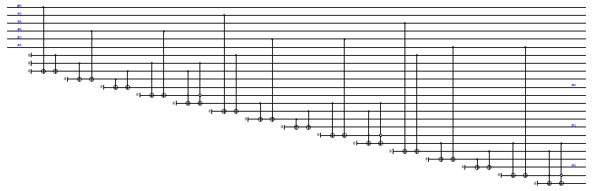
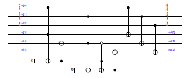

| Safe Haskell | None |
|---|
Quipper.Libraries.ClassicalOptim
Description
This library provides functions for optimizing classical
circuits. It is intended to reduce the size of
automatically-generated circuits, such as those that are built
using Quipper's build_circuit keyword.
Note: the resulting circuit is not expected to be optimal in absolute terms. In general, finding the smallest possible circuit to represent a given boolean function is an NP-hard problem. Rather, we transform the input circuit by applying a number of heuristics and an algebraic optimization technique. This results in the removal of redundant qubits and gates that are typical for machine-generated circuits. It generally decreases the number of gates and ancillas.
For example, consider the circuit for a simple adder, as generated
by the build_circuit mechanism:

The optimized version, as generated by simplify_classical, looks
like this:

The above example can be found in the file
Quipper/Demos/OptimTest.hs in the quipper-demos package.
Documentation
simplify_classical :: (QData x, QData y) => (x -> Circ y) -> x -> Circ y Source #
Optimize a Quipper circuit-producing function. This assumes that the function only consists of pseudo-classical quantum gates, i.e., initializations, terminations, and (possibly multiply controlled) NOT gates. The behavior on other kinds of circuits is undefined. The second argument is a shape parameter.
classical_to_reversible_optim :: (QData qa, QData qb) => (qa -> Circ qb) -> (qa, qb) -> Circ (qa, qb) Source #
Like classical_to_reversible, but also apply circuit optimization.
box_classical_to_reversible_optim :: (QData qa, QData qb) => String -> (qa -> Circ qb) -> (qa, qb) -> Circ (qa, qb) Source #
Like classical_to_reversible_optim, but insert the optimized
circuit as a boxed subroutine.